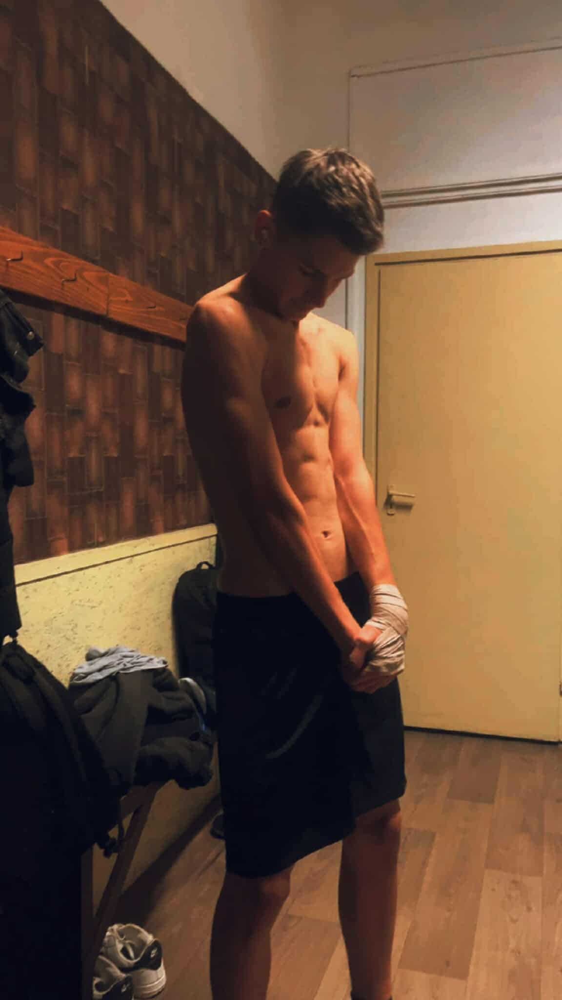
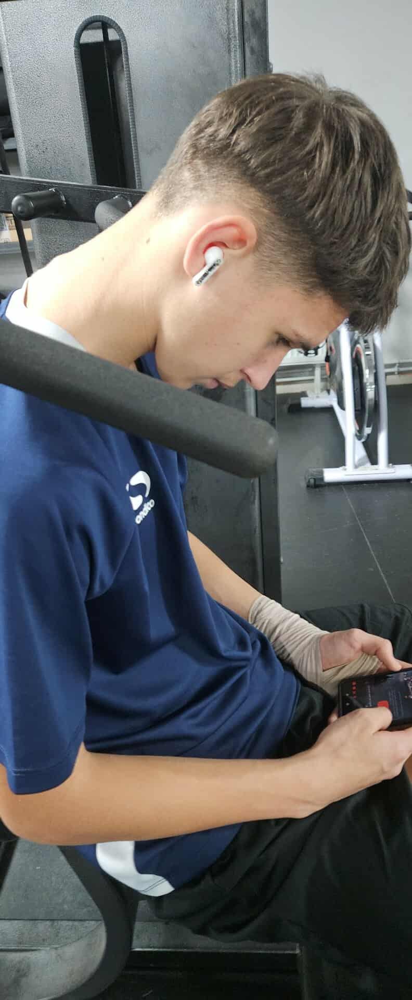
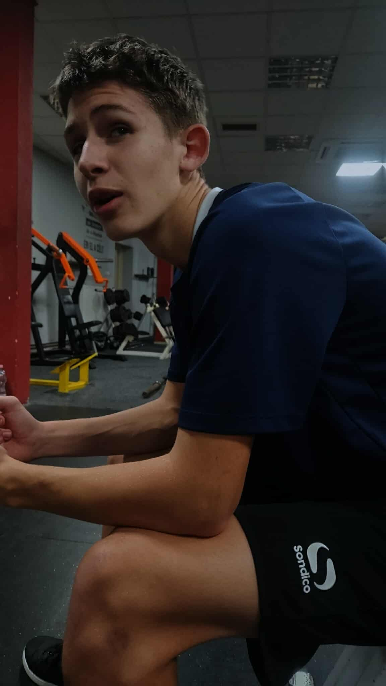
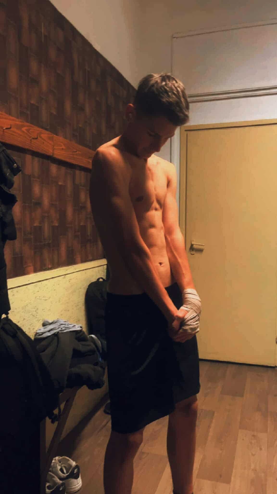
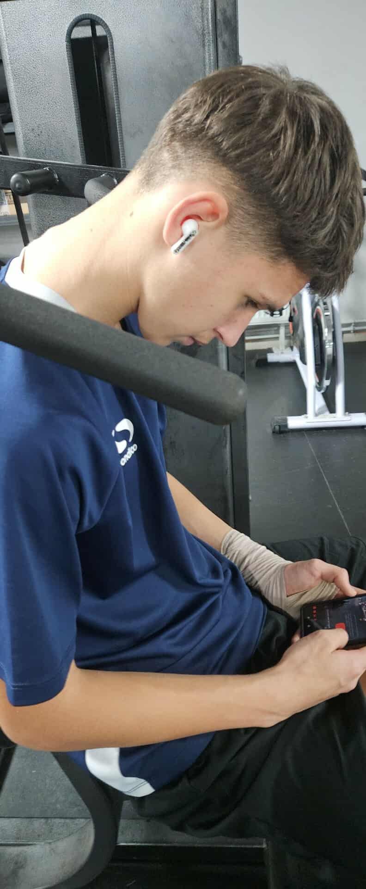
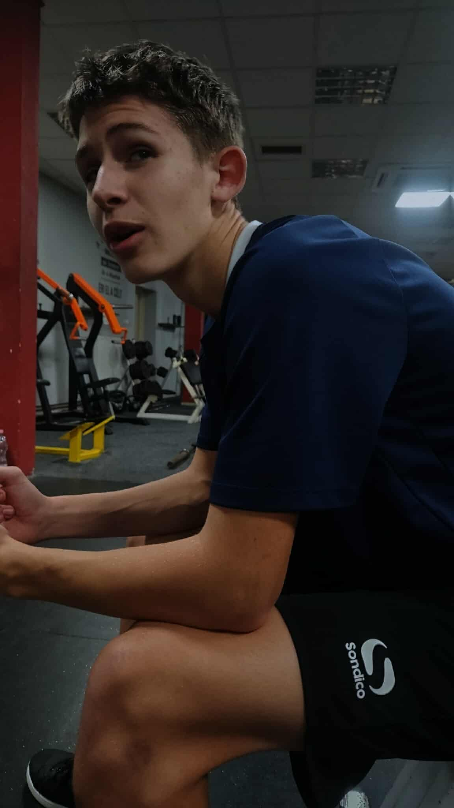

|
Személyes adatokNév: Fűrész Máté (Fütyi)Nem: Férfi Születési hely: Béka segge alatt Születési idő: Rendszer váltás előtt Állampolgárság: Roma Kedvenc zenéje: |
Története:Fütyi Máté – vagy ahogy a környéken ismerik: „Az Ember, Aki Mindenre Tudott Mutatni Valamit” – már egészen kiskorától fogva különleges képességekkel bírt. Amíg más gyerekek biciklizni tanultak, ő már háromévesen képes volt úgy felmutatni az ujját, hogy arról a galambok is visszafordultak. Születési helyének rejtélye máig megoldatlan. Egyesek szerint egy titkos föld alatti laborban jött világra, mások szerint tényleg „a béka… kissé komplikált anatómiai területén” látta meg a napvilágot. Az biztos, hogy a szülésznők még ma is beszélnek róla, leginkább azért, mert már újszülöttként is úgy nézett, mintha azt mondaná: „komolyan?” Máté nem sokkal a rendszer-váltás-előtt-szerű korszakban született – hogy pontosan melyik rendszer és mi váltotta, arról megoszlanak a vélemények. Egyesek szerint a családi routert indították újra éppen, amikor világra jött. Gyermekkorában az volt az álma, hogy egyszer világhírű sportoló lesz. Nem nagyon tudta, milyen sportban, ezért mindent kipróbált: pingpongot, súlyemelést, sakkozást, egyszer még a porszívózásban is országos rekorder lett (bár véletlenül a szomszéd macskát is beszippantotta). Mára Máté igazi legendává vált a konditeremben. A helyiek szerint ő az egyetlen, aki képes bicepszezés közben is teljesen rezzenéstelen arccal mutatni azt az ikonikus kézmozdulatot, amit a képen látsz. Állítólag ettől nő az izom 17%-kal gyorsabban – bár ezt tudományosan még senki sem merte vizsgálni. Mostanában azt mondják róla, hogy saját valóságshow-t indít, „Máté és a Mutatóujj Misztériuma” címmel, ahol minden részben másnak… mutat valamit. |
Kapcsolódó körözésekTanár bosszantása – Btk. 420.§Órai rendbontás – Btk. 666.§ |